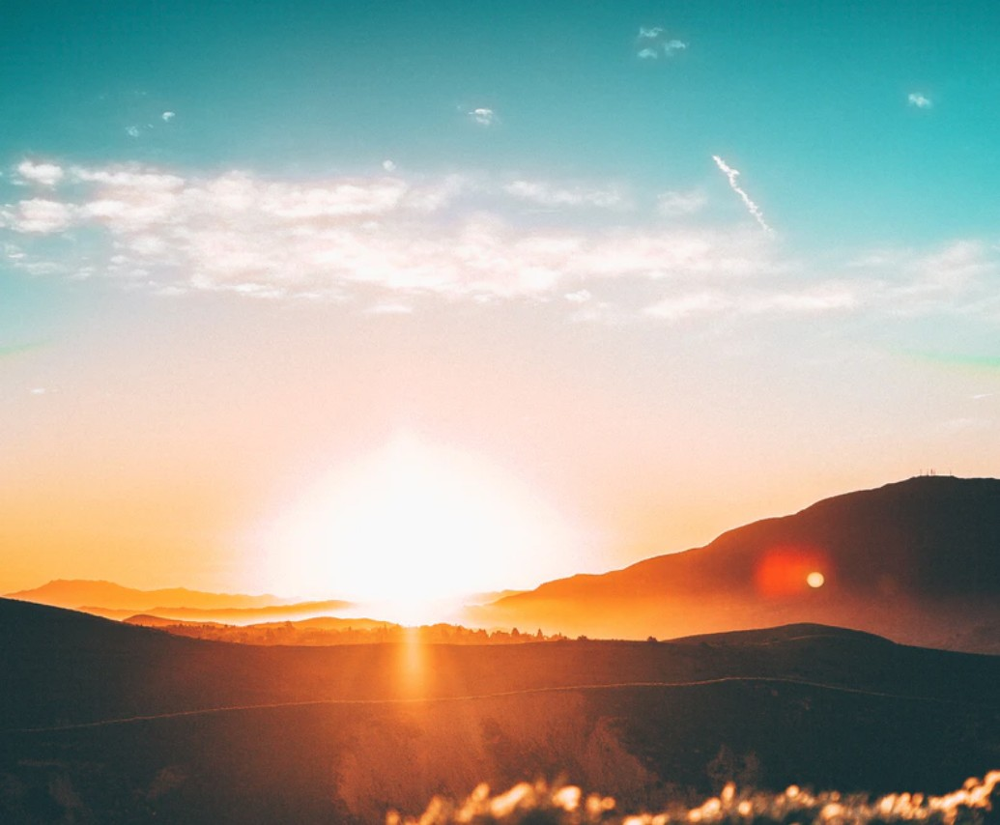

June 29th 2020, 10:18:42 pm EDT

Listen
To rise, to become strong, to grow and to break away and become more authentic,
is our first great responsibility, and our health.
However, it does go against our nature as children,
we have a tendency not to look outside of the culture we are brought into.
Rite of Passage is about crossing that line,
the line between The Child That Follows, and The Adult That Leads.
The moment we can handle looking at ourselves and our culture,
from the outside in, we begin crossing the line into adulthood.
One of the first few thoughts may be, "But what if I was born into a different religion?"
followed by, "What if I was not born into this economic class, into this poverty?".
As these questions grow from asking about ourselves, to also including others,
they bring us insight into the greater Human Condition.
Bring us to the question of The Freedom of Will, of how much our Personality is Our Own,
of internal decision making heavily influenced by external culture or placement.
As we grow we begin asking even greater questions about others,
"Would the petty thief stole, had he not been fractured by the virus of poverty?"
Our minds begin scanning for solutions that aim towards a Greater Good,
towards Word Peace, International Convergence on Wisdom, Unites States of The World.
We begin seeing that although there isn't an answer to every question,
there are Dreams that could prevent the worst of World's Mistakes.
Building schools to help a culture grow,
instead of forecasting war and manufacturing enough weapons.
Preventing the existence of criminals,
by helping little children to Happy Homes, and to a Universal Basic Income.
Trading simple schools and grades for Business Success,
helping children to become Well Funded Entrepreneurs and Investors.
No matter which questions we begin with and how our path is arranged,
we discover how critical Growing Up is, for us, for eveyone.
How much more we are,
than mere followers of the rules that we are born to.
How important to our mental health,
it is not to fall a victim to bad ideas or fractures of poverty.
Our First Great Act in life is lifting ourselves above the culture we are born into,
that is the meaning of the words Rising, Growing Up, Breaking Away, Becoming Stronger.
And the acts of independent thinking that are sure to follow,
are the very foundation of Our Hope in a Better Future.
Have no fear of Rising, of Breaking Away, of Growing Up, of Growing In Strength,
for that is Adulthood, and none can stay children for long.
Close your eyes, and begin building,
because your next step is to become a Great Being.
June 28th 2020, 11:34:49 pm EDT

Listen
No worries, the only real darkness is the Twilight of Hesitation,
it is dangerous because it makes time go by all too fast.
So you just have to make a promise to your self,
that each day will be a tiny-tiny itsy-bitsy better; than then previous.
Other than that, no cloud could ever stop the sun from rising,
nothing can endanger your brilliance, there is nothing to fear.
And brilliance,
brilliance leads to enlightenment.
So as long as you protect your light,
know that wisdom is your right.
Never stand still and always take to flight,
yours is enlightenment, the brightest of light.
Never has there been a night,
that was wasn't lit by light.
Never has there been a fight,
that wasn't won by Wisdom's Might.
Rise, rise in spite of the fright,
rise to no end in sight.
June 27th 2020, 11:16:50 pm EDT

Listen
Anything that can go wrong may go wrong,
and there is only one guarantee in life.
It is a guarantee, precisely because it is within our complete control,
the guarantee is The Greatness Of Our Soul, or Spirit, or Being.
It means you will keep getting up no matter how many times you fall,
it means you will continue moving forward without stopping.
It means there is no pain, it means there is no weakness,
that it is a function and fact of life that we advance forward.
And on the day of triumph,
it means that the prize is nothing less than Laughter and Joy of Life.
The Greatness of Our Soul, our single guarantee in life,
may begin in discomfort, but it concludes with something far more.
Marvels of the Human Spirit that we can't directly conjure up within ourselves,
marvels that can only come out of our Might and Authenticity.
Humor and Foolishness, Cheerfulness and Bliss,
Sweetens and Giggles, Joy, Laughter, Wisdom and Delight.
Greatness of Soul.
June 26th 2020, 10:44:01 pm EDT

Listen
For those of you who had trouble,
finding the Northern end of the I-275 Bicycle Tail.
Hines connects North and South parts,
but it is really hard to find the North Entry Point
I got on my bicycle today,
and took some pictures.
You have to find the M-14 Overpass,
or an Overpass with a huge dark rail beneath.

That rail is the support beam,
for the Trail On-ramp.

A bit further down the road,
there is a road that leads up to the On-ramp.

It is a ramp specially made,
for the Handsome Adventurous Bicyclist.

It opens like the door to a secret garden,
very few people bicycle there.

The trail continues for many more miles,
all the way up to 14 Mile Road.

Over at 14 Mile it ends wonderfully unceremoniously,
it just pops out onto a sidewalk.
Where motorists jump in their cars slightly,
as you pop out somewhat dehydrated, a little crazed, and a bit wild.
June 25th 2020, 10:54:26 pm EDT

Listen
Back when I was a Teenager,
one late Friday afternoon.
I had a nap, so amazing,
I have never forgotten about it.
I woke up light as a feather,
and I dressed beautifully.
And went exploring,
little Coffee Shops in Plymouth.
I went to see The Brew Ha Ha,
full of Mighty Minds with Extreme Dreams.
I peeked into Coffee Studio,
and saw Angel-headed Hipsters reading Tolstoy.
I poked into The Bean,
full of Dirty Hippies, reciting Beautiful Poetry.
I made my way back home,
walking alone through streets of gold.
I read Chaucer,
programmed Visual Basic.
And went back to sleep,
full of new memories that I would keep.
June 24th 2020, 8:59:53 pm EDT

Listen
In the beginning we discover our Universal Self,
the Being we are, regardless, of what Culture or Place we are born into.
Then we set an aim, by asking our Elder Selves what heir regrets are,
the more we advance forward the more we become Ourselves.
The less regrets our Elder Selves have,
the more we become in harmony with ourselves.
The Way Of The Warrior, is a self correcting path,
each time we advance we become stronger, wiser, and more powerful.
Frame after frame, as time ticks away, and our minds and bodies grow,
we near, and finally become; our Elder Selves.
We arrive with Certainty of Knowing that the path we traveled was our own,
that we are in Harmony with Universe, that all our Senses are Finely Tuned.
In moving forward we don't need to ask what life is for,
Life is for the Living, for those who grow and advance forward.
There cannot be any real regrets as we had decades to avoid them,
and whatever obstacles there were, we never lost our way.
The Final Aim, is to rise all the way up, and become a Great Being,
to build a legacy of Wisdom and Good Ideas, Lessons Worth Sharing, and Moving Inspiration.
June 23rd 2020, 11:39:32 pm EDT

Listen
Try to imagine yourself born in different places or to different cultures,
note how you are influenced by all the surrounding factors.
Note, how there are parts of you that never do change,
that form some kind of a foundation.
Rather, than than letting your place of birth or culture influence you,
imagine inventing yourself independently of everything.
Look towards Nonfiction Books or Audiobooks, Memoirs and Biographies,
and see what wisdom you can inherit to help you on your own journey forward.
Allow those parts of you that never seem to change no matter what culture you are born into,
to expand, and grow upwards.
See if becoming a Citizen of The World,
and not any nation in particular, helps you see the World more clearly.
See if becoming a Lover of all Wisdom, and All Good Ideas,
and not merely the culture you were born into, helps you understand more about the Human Condition.
Imagine that you are Made of Stars,
that you are a Child of the Universe.